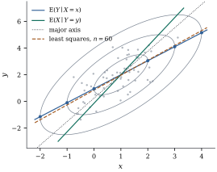

Throughout this section
is split into and
,
with as in Theorem 2.5.1. The
question is what looks like once
has been
observed. The answer is the probabilistic core of
regression.
3.5.1. Partial
covariance with a generalized inverse
The natural answer involves , but
may be
singular, for instance when contains a sum and
its summands. A generalized inverse (Definition 1.3.1)
removes the need for a separate treatment. The facts
that make this work were proved for arbitrary random
vectors in Section
2.5. We collect them in the notation of this
chapter.
Lemma
3.5.1
Let be
nonnegative definite and partitioned as above, and let
be any
generalized inverse of . Then:
(a),
so for some matrix ;
(b)
and ;
(c), which does not depend on
the choice of
and is nonnegative definite.
The matrix ,
the Schur complement of in , is therefore
well defined. It is the partial covariance matrix of
given in the sense of Theorem 2.5.2.
Proof. By Theorem 3.1.2,
is the
covariance matrix of some random vector, so (a) and (b)
are Theorem 2.5.1(c).
For (c), .
3.5.2. The
conditional distribution
Theorem
3.5.2 (Conditional distribution)
Let
be partitioned as above, let be a generalized
inverse of , and put
.
Then:
(a)
is independent of and ;
(b) the
conditional distribution of given is
(3.5.1)
and for \( \y_2 \) in \( \bmu_2+\C(\bSigma_{22}) \), where \( \Y_2 \) lies with probability
one, the conditional mean does not depend on the choice of \( \G \);
(c) if is positive
definite, then ,
is positive definite,
is the leading block of , and .
Proof.
(a), so
is
an affine function of and is jointly normal
(Theorem 3.3.1).
The vector is
the error of the best linear predictor of from , so by Theorem 2.5.2(a,b)
it has mean zero, and
.
These are moment calculations, valid for any random
vector. What normality adds is that zero covariance
becomes independence (Theorem 3.4.1),
and that , a
linear function of , is normal.
(b) Write .
The first two terms are a function of , and is independent of
. For
independent and
, the
conditional distribution of given is the
distribution of (Billingsley
1995). With ,
this is the normal distribution
If , then , which does not involve
.
(c) If is positive
definite, so is its principal submatrix , and its
only generalized inverse is its inverse. By the block
determinant formula (Theorem 1.6.3),
which needs only nonsingular,
.
The left side and are
positive, so is
nonsingular. It is nonnegative definite, being by (a), hence
positive definite. With both and its
Schur complement nonsingular, the partitioned-inverse
formula (Theorem 1.6.4)
gives
as the leading block of .
When is
positive definite, (b) can also be read off the
densities. By (c), is
positive definite, so has a density. The map
has unit Jacobian, so
by independence, and dividing by gives the
conditional density.
Idea. Every jointly normal vector
splits as The first term is a linear regression of on . The second is a
normal error whose distribution is the same whatever
value
takes.
3.5.3. What the
theorem says
Three features of 1 are special to the normal
distribution, and each is an assumption of the classical
linear model.
(i)The
regression is linear. is
an affine function of , with coefficient
matrix .
(ii)The
errors are homoscedastic. The conditional
covariance is the
same for every . Observing tells us where is centred, but not
how spread out it is.
(iii)Conditioning cannot increase uncertainty.
is nonnegative definite (Lemma 3.5.1(c)),
so every linear combination has
conditional variance at most its unconditional variance.
The reduction is zero iff .
None of these holds in general. In the mixture of Example (A mixture of two correlations),
given the
variable is an
equal mixture of and . Its conditional mean is for every , but its conditional
variance is ,
which grows with . Linearity and constant variance are
not consequences of normal margins or of zero
correlation. They are consequences of joint
normality.
One response, several predictors.
The case used most in this book has a scalar response
and a vector
of predictors, jointly
normal, with ,
and
positive definite. Theorem 3.5.2
says
(3.5.2)
with , where
is the population squared multiple correlation (Proposition 2.5.3).
So if observations are drawn
independently from a joint normal distribution, then
conditionally on the predictors, the normal linear model
with independent homoscedastic errors holds exactly.
Inference that treats the predictors as fixed is valid
for random predictors, as Chapter 14 develops.
The bivariate case. With , correlation and standard
deviations , In standard units, .
The predicted response is fewer standard deviations from
its mean than the predictor is from its mean, whenever
.
This is regression toward the mean,
Galton’s observation about the heights of parents and
children (Galton 1886), and the origin of the word
“regression”. It is also a warning. Regressing on is a different line,
,
and when
neither line is the major axis of the density
contours.
Example
(Two regression lines)
Take ,
, , and . The regression
of on has slope and residual
standard deviation . Drawn in the same
plane, the
regression of on
has slope , and the major axis
of the ellipses lies between them, with slope . Figure
3.5.1 shows the three lines. The line passes
through the points where each contour ellipse has a
vertical tangent (Exercise (B2)):
on a vertical line , the density is
highest at the conditional mean. A least squares line
fitted to draws
has slope
(standard error ). It estimates the
regression of on
, not the major
axis.

Figure
3.5.1. Contours of a
bivariate normal density with . The conditional
mean line passes through the points of vertical
tangency (dots). The line passes
through the points of horizontal tangency and is
steeper, and the major axis lies between the two. Least
squares on a sample of points estimates .
Example
(Holding a third variable fixed)
Let
with Conditioning on alone gives slope
and conditional variance .
Conditioning on , the listing
computes
in exact arithmetic and finds The coefficient of changes sign. Among
outcomes with the same , larger goes with smaller
. Across all
outcomes, larger goes with larger
, because both
tend to be large when is large. The
conditional variance also equals ,
as Theorem 3.5.2(c)
predicts.
Section
6.11 defines the best linear predictor as a
projection, and shows that the conditional mean is the
best predictor among all square-integrable
functions of .
For a scalar response, the gap between the two is the
approximation error of Proposition 6.11.2(c).
Under joint normality the gap is zero.
Proposition
3.5.3
Let be
jointly normal and partitioned as above, and let .
For every function with , So minimizes the mean squared prediction
error over all predictors, it equals the best linear
predictor of Theorem 6.11.1 (entry
by entry, when is positive
definite), and the minimum is .
Proof. with as in Theorem 3.5.2.
The cross term vanishes, because has mean zero and is
independent of . And .
The minimizer
is affine, so it is also the best affine predictor,
which is the best linear predictor.
The proof is short because independence of and is much stronger
than the zero correlation that defines a projection. For
non-normal vectors only zero correlation is available,
and the best linear predictor is merely the best
linear predictor.
3.5.5.
Exercises
A. Check your
understanding
Exercise
(A1)
For and
of Example (Holding a third variable fixed),
find the conditional distribution of given and of given .
Verify that the conditional variances are smaller than
the unconditional ones.
Exercise
(A2)
In the setting of Eq. 3.5.2, let
be the
inverse of .
Show that the row of belonging to
is ,
where . So the regression coefficients and the
error variance can be read off one row of the precision
matrix.
Solution. Put first and apply Exercise (B5)
with the scalar block and . The conditional
variance is ,
and the coefficient vector of the conditional mean is
.
Hence
and .
By Eq. 3.5.2,
.
B. Practice
Exercise
(B1)
Suppose
and that, given , is
with , and not depending on
. Show that
is jointly normal and find its mean and covariance.
Explain why Example (A mixture of two correlations)
does not contradict this.
Solution. Condition on : Inserting from Theorem 3.2.1,
the exponent is linear plus
with ,
so the pair is normal with mean and covariance
. In Example (A mixture of two correlations),
the conditional distribution of given is a mixture, not a
normal distribution, and its variance depends on .
Exercise
(B2)
Show that for a bivariate normal density with ,
the points of each contour ellipse at which the tangent
is vertical lie on the line . Explain
the result in terms of the conditional density of given .
Solution. Write the ellipse as
.
At a point with vertical tangent, the normal vector
is
horizontal, so
and .
The slope
is that of the conditional mean line, and both such
points ( and ) lie on it.
Along the vertical line , the joint density is
proportional to the conditional density of , which is highest at
. The
contour that just touches the vertical line touches it
at the point of highest density on that line.
Exercise
(B3)
Let be
independent and . Show
that is
jointly normal with .
Find the conditional distribution of given , and comment on its
variance as a function of .
Solution.
with lower
triangular and all entries on and below the diagonal
equal to one, so the vector is normal with covariance
, whose
entry counts
the common indices, . By Theorem 3.5.2
with ,
, The conditional mean interpolates linearly
between and . The variance is zero
at both ends, where the value is known, and largest in
the middle.
Exercise
(B4)
Let
be normal with positive definite covariance, and let
.
Show that is singular.
Using a generalized inverse, show that the conditional
distribution of
given from Theorem 3.5.2
coincides with its conditional distribution given .
Exercise
(B5)
With
partitioned like , show that
and .
Solution. By Theorem 1.6.4,
and .
Hence
and .
Substitute into 1.
C. Going deeper
Exercise
(C1)
Assume
is positive definite. Prove Theorem 3.5.2(b)
by dividing the joint density by the marginal density of
directly,
using the partitioned inverse and the block determinant
formula.